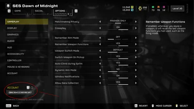
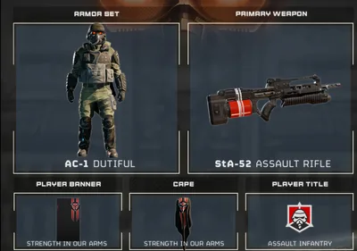

Close game, delete 绝地潜兵 2 folder from %appdata%\Arrowhead
- You can do this manually or use the Hellbomb Script -> "Clear Data Options" Menu -> "Clear Settings (Appdata)".
- 打开Steam个人资料 -> 编辑个人资料 -> 隐私设置 -> 将个人资料设为“公开”。
These problems relate to issues you encounter while being in-game in 绝地潜兵 2.

Please note that every 账户 has it's own unique 账户 ID, 否 matter what ingame-name you are using. This is really helpful in case you want to send a ticket to Arrowhead and helps the 支援 team to quickly find your 账户.[1]
如何找到你的账户ID：
偶尔 it can occur that your Antivirus 软件 flags 绝地潜兵 2 is containing a suspicious file, which has a virus / trojan named "Themida.L".[2] Themida 实际上 refers to a 软件 by Oreans Technology[3] which is designed to 保护 files from reverse-engineering (a "packer"). That in of itself might seems contradictory, but given the fact that it is used by malware developers to hide their malicious 软件, it can trigger the 安全 软件 your 电脑 使用次数.[4]
It is possible to refund items you have purchased within the game if you meet certain 标准:[5]
条件：
If you meet these 标准, you can then submit a 支援 request with the following information:
Please be aware that 绝地潜兵 2 supports cross-play between PC, PlayStation and Xbox to allow these different platforms to play with one another. However, this does not allow you to cross-buy or cross-save/cross-progress in any 容量. While you can link your Steam and PSN 账户, this does not copy any game-data between PC and PS5.[6]
If you are 正面 that you have found a bug, you can first check in with the list of known bugs. If you cannot find your bug in that list, feel free to create a 支援 request on Arrowheads Zendesk.[7]
If you want to send feedback to Arrowhead, then there's a variety of ways. The most common would be to join the 官员 Discord to be notified of the weekly surveys or ask moderators to invoke the Discord bot with the feedback form.
If you wish to give feedback outside of the regular feedback surveys, you can use this dyno page to send it once a week. Please note that you are 有限 to 2000 characters but every bit helps. Please note that this feedback should be made in 回应 to your 当前 玩法 经验值 and not for 特性 requests.[8]
绝地潜兵 2 requires you to be always online in order to play. Not only was it designed for playing with others but your entire progression is stored on servers. Solo-play is possible, however this still requires you to be online to access your profile and to store updated progress.[9]
Such services only need to be paid for if you want to play with a 控制台. Steam users are not 必需 to pay for these services to play online.[9]
遗憾的是，目前没有此类功能。
A lot of requests have been made about certain items, such as the Fallen Hero's 复仇 Cape which was awarded in remembrance of Malevelon Creek. These items were handed out to 玩家 who participated, so any player who got the game after the event will not 接收 it unless Arrowhead implements a way of getting such time-有限 items. If you are eligible for a time-有限 item but have not received it, it's best to 联络 Arrowhead.
| Item | 获取 | Login Time |
|---|---|---|
| Capes | ||
| Fallen Hero's 复仇 | Malevelon Creek 纪念馆 Day | 账户 had to exist before April 3rd, 2024. |
| Emblem of Freedom | N/A | 2月 8 - 2月 10, 2025. 账户 had to exist before 2月 10th, 2025. |
| Eye of Freedom | 周年纪念 gift | 2月 8 - 2月 10, 2025. 账户 had to exist before 2月 10th, 2025. |
| Ingress-81 | 车站-81 | May 9th - July 22nd, 2025 |
| 护卫 of the Heart | Heart of Democracy | May 20th - June 2nd, 2025 |
| Veridical Ideology | Liberty Day | August 28th - 10月 26th, 2025 |
| Against the Tyrant Cloud | Oshaune | 9月 2nd - 11月 4th, 2025 |
| Reckoning's Cheer | 庆典 of Reckoning | 12月 18th - 12月 31st, 2025 |
| Eye of Liberty | 周年纪念 Gift | 2月 1st - 2月 28th, 2026 |
| United in 平等 | 周年纪念 Gift | 账户 had to exist before May 30th, 2025. |
| 护甲 | ||
| TR-7 大使 of the Brand | Pre-Order Bonus | N/A |
| TR-9 Cavalier of Democracy | Pre-Order Bonus | N/A |
| TR-62 Knight | Pre-Order Bonus | N/A |
| TR-40 Gold Eagle | Escalation of Freedom | 账户 had to exist prior to August 28th, 2024. |
| B-22 Model 公民 | 周年纪念 Gift | 账户 had to exist before 2月 10th, 2025. |
| KDM-500 Outrider | Campaign Permanent Enclosure | July 28th (00:00 UTC) - August 11th, 2026 (08:20 UTC) |
| Helmets | ||
| KDM-500 Outrider | Campaign 闪电 Intercept | July 14th (09:00 UTC+1) - July 27th, 2026 (09:00 UTC+1) |
| 战略配备 | ||
| M-103 Supply FRV | Campaign Census Thunder | June 16th - June 29th, 2026. It's slated to become available 10月 2026.[10] |
| 主武器 | ||
| R-4 Hyena | Campaign Celestial Fence | June 30th (00:00 UTC) - July 13th, 2026 (14:00 UTC) |
The 战争债券 token is a form of ingame-货币 which allows 玩家 to claim any 尊享战争债券 (but not 传奇 战争债券!) without having to spend 超级货币. You can get a 战争债券 token by buying the Super 公民 Edition of the game or upgrading your regular Version with the Super 公民 升级 DLC. This has been implemented in August 26th 2025.[11]
Please not that 传奇 战争债券 are explicitly exempt from the 使用 of 战争债券 Tokens. 传奇 战争债券 are unique 战争债券 reserved for 特殊 purposes, such as collaborations with other franchises and 费用 1.500 超级货币 instead of 1.000 超级货币.[12]
目前这些战争债券无法通过战争债券代币兑换：
There has been some 困惑 on the "正义 Revenants 传奇 战争债券" (which was made in 协作 with the Killzone franchise). Some users got it for free while others had to pay for it, even though some of the users already own / owned parts of it.[13]
谁得到什么以及它如何运作：

如果你购买了以下任何物品，你将免费获得该战争债券：
赠品（如果你已经拥有它们，可以保留，但仍需为战争债券付费！）：
（这些物品无法购买——如果你拥有它们，请注意你从未为它们花过钱！）
New 玩家 in particular might find that quick play and 难度 selectors are missing and that they can't start any missions. If you find yourself in that situation that planets are locked up (even though you should be able to access them) and you can select 两者都不 quick play nor 难度, then follow these steps:
如果游戏在尝试更换行星时崩溃，请按照以下步骤操作：
如果你被困在生化斯坦且无法在不崩溃的情况下离开，请按照以下步骤操作：
If you 经验值 sudden disconnects or game 崩溃 upon the 4th player joining the game, please check if that person has set a skin for the new Incinerator FRV or Supply FRV. Unfortunately it is possible to equip the Mobile White 涂装 from the Exo Experts 尊享战争债券. Since these FRVs aren't available yet and not everyone owns this skin, this will cause the game to 经验值 the aforementioned difficulties.
If you access the 控制 Center and it shows 庞大 artefacts, please check if you have DX11 enabled (--use-d3d11). If so, please deactivate DX11 and launch the game regularly in DX 12.
如果游戏在互动控制中心时崩溃，请检查以下内容：
如果你没有收到奖章，应考虑以下几点：
This error makes the player run in slow motion while the rest of the game seemingly has normal 速度. The exact cause for this isn't known but might be 相关 to the GPU.
--use-d3d11 launch 指挥, please remove it.社交标签页自去年改版后有所改善，但仍偶尔出现问题。 For PS5 and PC 玩家 there are some 稳定性 issues affecting a 小型 portion of 玩家 that seems to clear up when CrossPlay is Disabled. If you've tried different approaches but still encounter crashing issues, then try disabling CrossPlay. Note that Xbox doesn't have an In-Game option for this but has to set this in the 控制台's settings.
If your game displays only as On Menu or 离线 , check for a Double-NAT as shown in 网络 故障排除 (Please 请参阅 the different sections of your specific device).
If the Social Tab is displaying Please Wait Democratically and not updating your friends list:
Close game, delete 绝地潜兵 2 folder from %appdata%\Arrowhead
以下是通常建议的添加好友步骤：
如果仍然不成功，或者他们被屏蔽而你无法解除屏蔽，请向Arrowhead提交工单，请他们清除你的黑名单。
请注意，游戏的日版与世界其他地区存在一些差异；这是因为日本有关游戏内货币和超级商店的法律。
这些问题的表现是超级商店物品或战争债券部分出现方框。
如果你过去购买过战争债券，但现在无法访问，请考虑以下几点。
如果你看到战争债券全白（横幅只是一个白框）且无法互动，请尝试以下步骤：
这样你应该能让Steam检查新更新并下载包含战争债券正常运行所需全部资源的文件。
如果你无法购买战略配备的涂装，例如外骨骼装甲涂装，请尝试以下方法：
This crash has become rare, but it can still 偶尔 occur. When attempting to edit the Weapon 配件 the game 崩溃 every time.
虽然没有你可以采用的确定修复方法，但有一个临时绕开问题的变通方法。
The weapon you have equipped will now be customizable. It's tedious, but you'd have to do the same step for any other weapon you wish to customize.